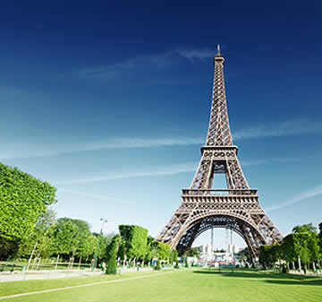

Top Destinations

Venice
City in northeastern Italy and the capital of the Veneto region. It is built on a group of 126 islands that are separated by expanses of open water and by canals; portions of the city are linked by 472 bridges. The islands are in the shallow Venetian Lagoon, an enclosed bay lying between the mouths of the Po and the Piave rivers . DetailsNew York
New York City or simply NYC, is the most populous city in the United States, located at the southern tip of New York State on one of the world's largest natural harbors. The city comprises five boroughs, each of which is coextensive with a respective county. Details
Paris
Paris, capital of France, is one of the most important and influential cities in the world. In terms of tourism, Paris is the second most visited city in Europe after London. In this travel guide, you’ll find out about the city’s top attractions, as well as useful travel advice on how to get to Paris and how to save money whilst traveling. Details
Castles
A castle is a type of fortified structure built during the Middle Ages predominantly by the nobility or royalty and by military orders. Scholars usually consider a castle to be the private fortified residence of a lord or noble.Details

Resorts
A resort (North American English) is a self-contained commercial establishment that tries to provide most of a vacationer's wants, such as food, drink, swimming, accommodation, sports, entertainment and shopping, on the premises.
Details
Seven Wonders of the World
Wonders of the World have been compiled from antiquity to the present day, in order to catalogue the world's most spectacular natural features and human-built structures.
The Seven Wonders of the Ancient World is the oldest known list of this type, documenting the most remarkable human-made creations of classical antiquity; it was based on guidebooks popular among Hellenic sightseers and as such only includes works located around the Mediterranean rim and in the ancient Near East.
Details
Caves
A cave or cavern is a natural void in the ground, specifically a space large enough for a human to enter. Caves often form by the weathering of rock and often extend deep underground. The word cave can refer to smaller openings such as sea caves, rock shelters, and grottos, that extend a relatively short distance into the rock and they are called exogene caves.
Details